Was wir gebaut haben.Baustellen aus Landsberg, Ammersee & Umgebung
Rohbau, Altbau, Denkmal, Putz, Bad, Pool — eigene Fotos von eigenen Baustellen.

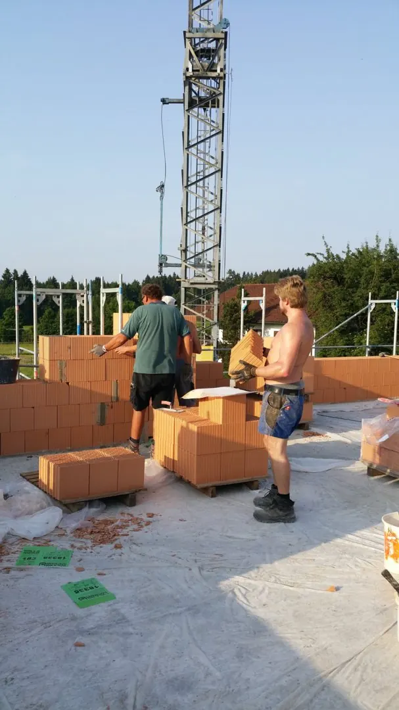
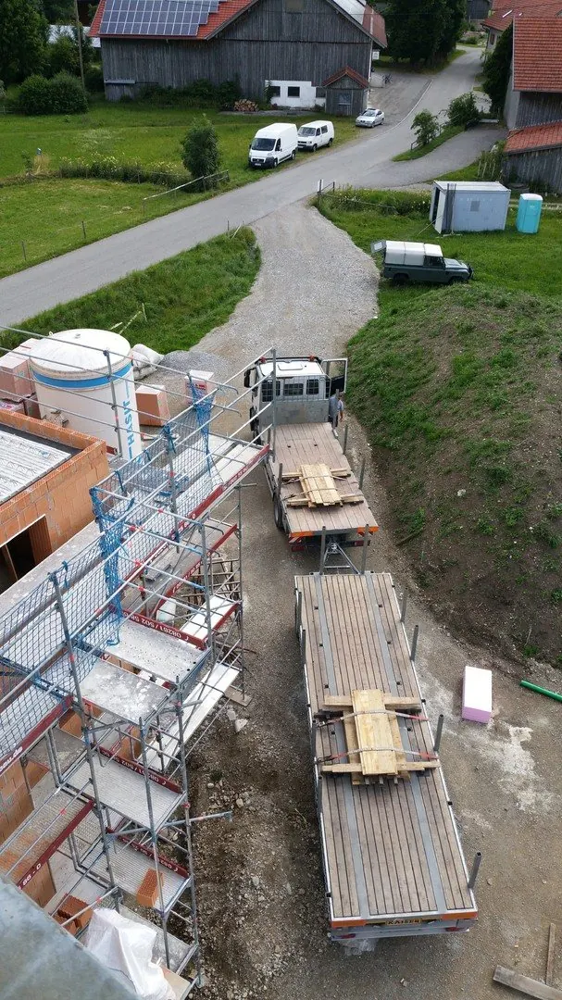
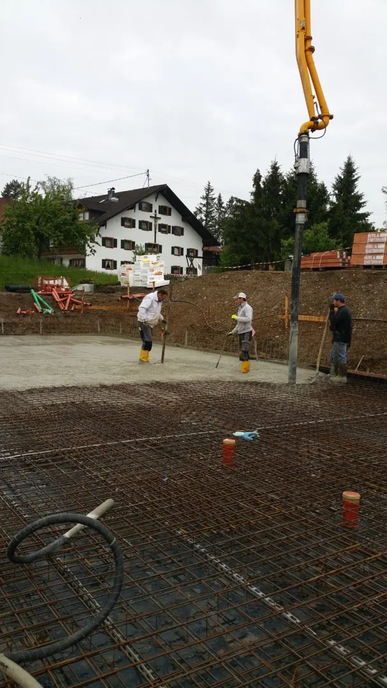

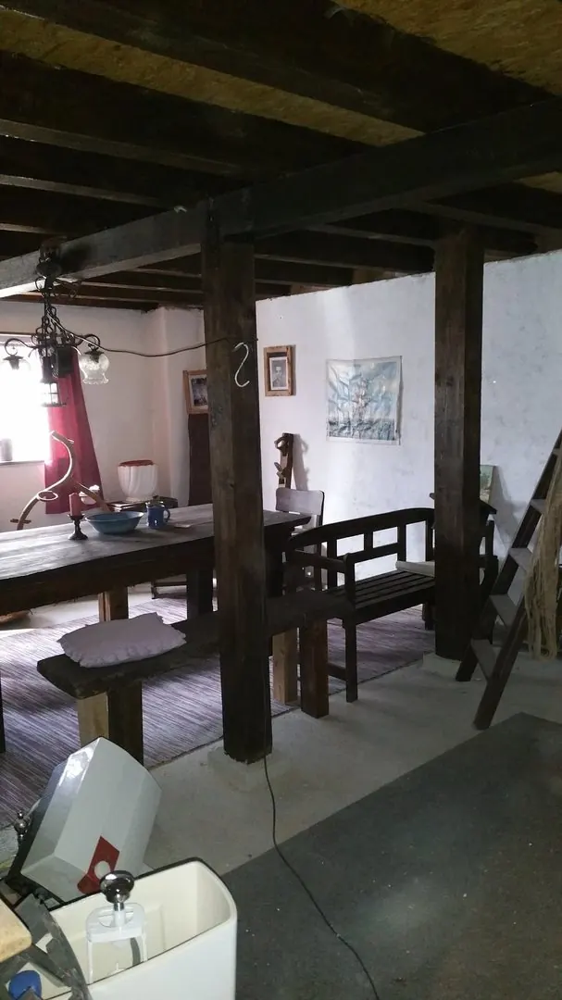

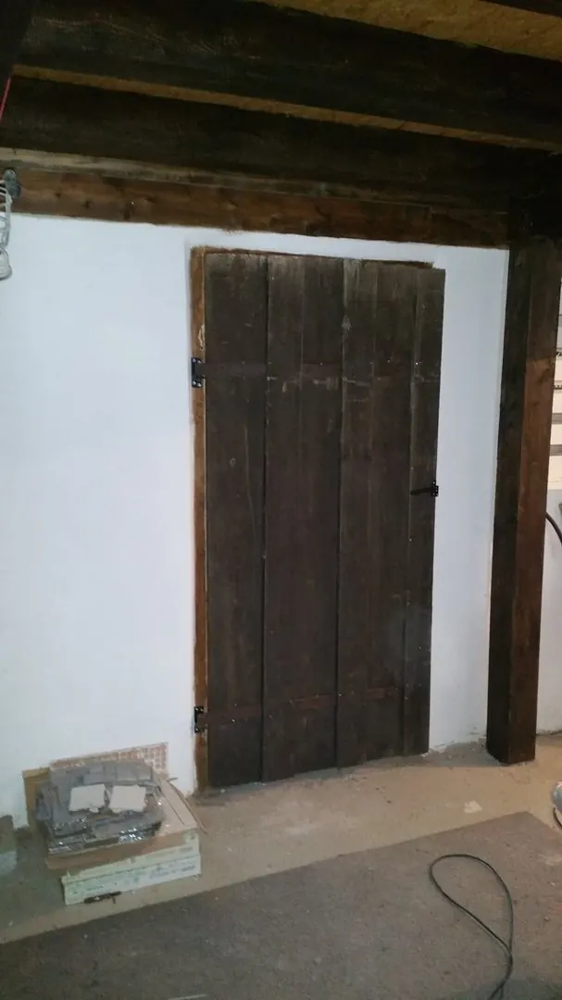
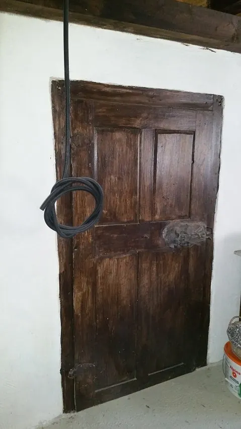


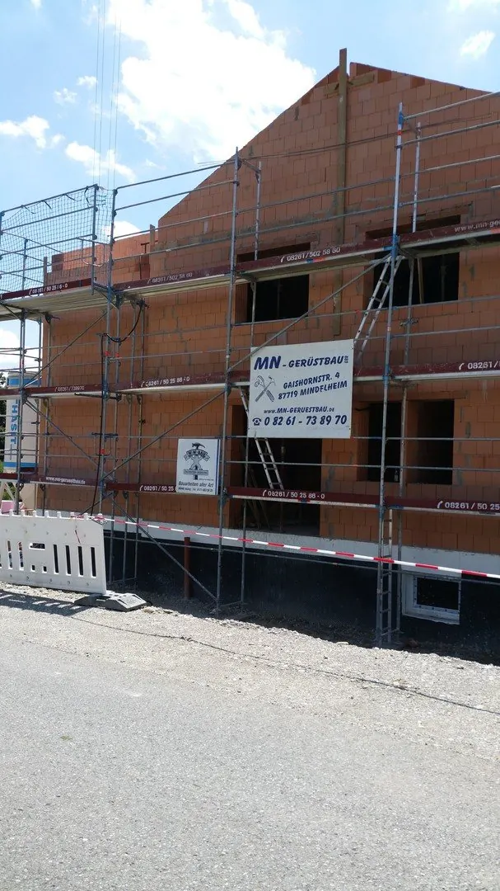
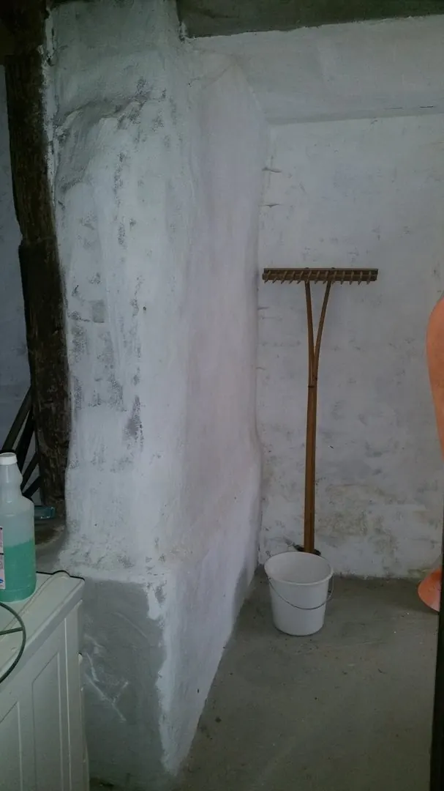
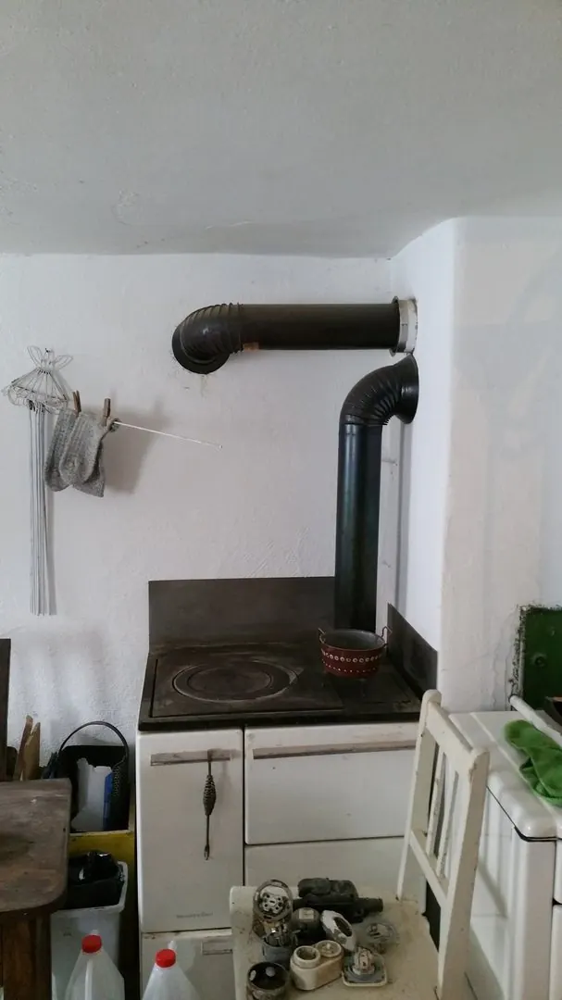


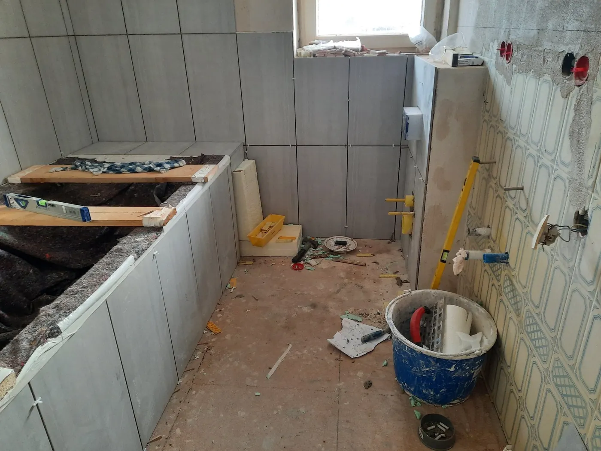
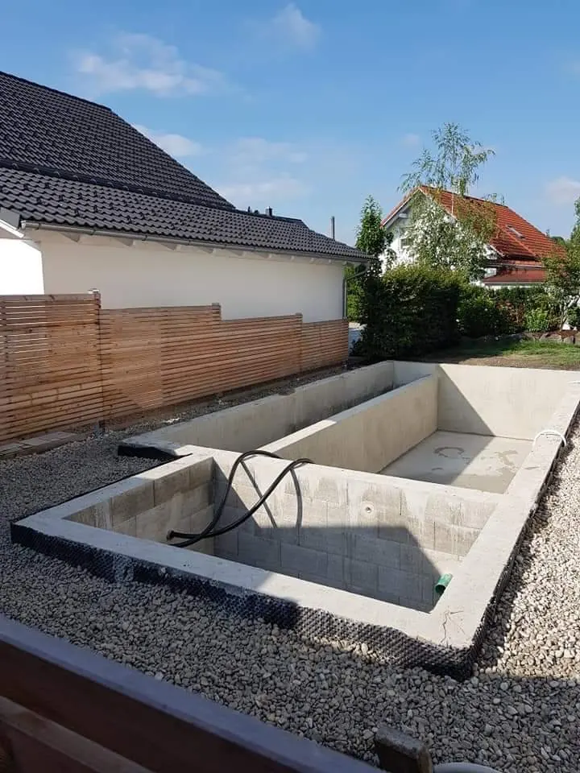
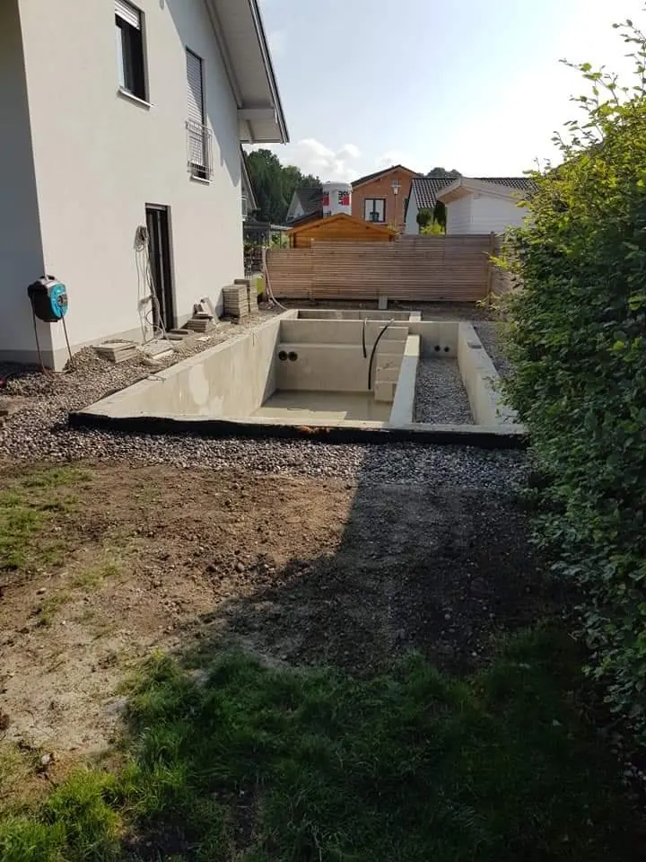
Nächstes Projekt
Ihr Haus könnte das nächste sein.
Jede dieser Baustellen hat mit einem Anruf angefangen. Sagen Sie kurz, worum es geht — wir schauen es uns vor Ort an.
Projekt anfragen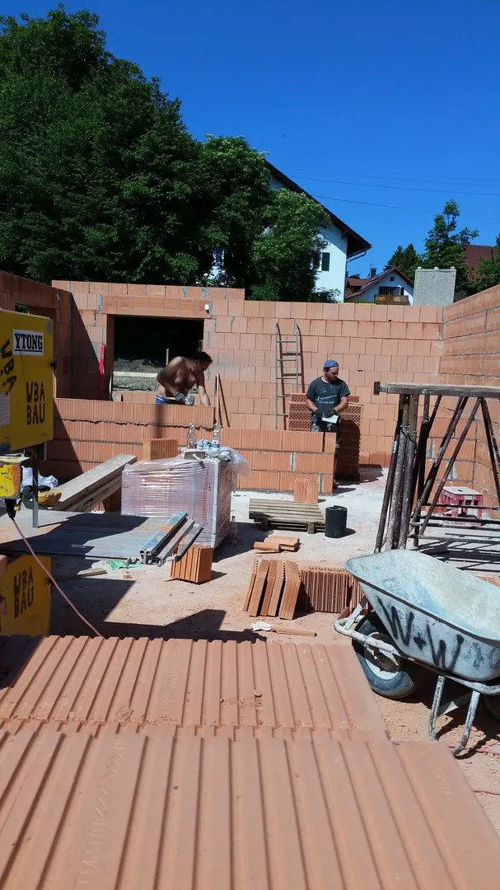
Nächster Schritt
Reden wir über Ihr Bauvorhaben.
Rufen Sie an oder schreiben Sie kurz, worum es geht. Der Rest läuft an drei Nägeln entlang:
- Anruf oder NachrichtSie sagen, was ansteht — am Telefon oder über das Formular.
- OrtsterminWir kommen vorbei, messen und schauen uns den Bestand an. Kostenlos.
- Klares AngebotEin Preis, ein Zeitplan, ein Ansprechpartner — dann geht es los.